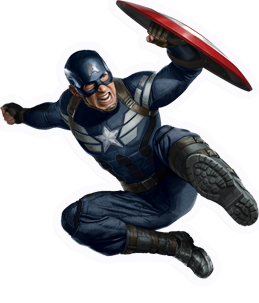

Os Vingadores (Avengers no original em inglês) são um grupo de super-heróis de história em quadrinhos publicados nos Estados Unidos pela editora Marvel Comics. O grupo também aparece em adaptações da Marvel para cinema, desenho animado e videogames.
Os heróis mais conhecidos são a formação original de Thor, Homem de Ferro, Vespa, Homem-Formiga, e Hulk, além de seu primeiro recruta, o Capitão América (introduzido na quarta edição). A equipe, foi inspirada na Liga da Justiça da DC Comics, tem molde de um clube, inclusive com o mordomo do Homem de Ferro, Jarvis, os servindo. No Universo Marvel, a equipe tradicionalmente é a primeira a ser chamada pelo governo dos EUA quando defrontado por desafios de ordem cósmica, e tem bases em Nova York e uma ilha na costa americana.
A primeira aparição dos Vingadores nos quadrinhos foi em sua própria revista, intitulada The Avengers, em Setembro de 1963 (no mesmo mês de estreia de X-Men). A equipe foi criada por Stan Lee, Jack Kirby e Dick Ayers, como uma resposta à Liga da Justiça, cuja revista reunia em uma história os principais heróis da DC Comics. A Liga da Justiça já inspirara uma primeira resposta da Marvel Comics, o Quarteto Fantástico, que todavia era um grupo de heróis novos, assim como o subsequente X-Men. Os Vingadores, reunidos dois anos depois do Quarteto, foram os primeiros da Marvel fiéis ao conceito da equipe de super-heróis já estabelecidos.
É um futuro filme estadunidense de super-herói de 2019, baseado na equipe Os Vingadores da Marvel Comics, produzido pela Marvel Studios e distribuído pela Walt Disney Studios Motion Pictures, sendo a sequência de Marvel's The Avengers, de 2012, Avengers: Age of Ultron, de 2015, e Avengers: Infinity War, de 2018, e o vigésimo segundo filme do Universo Cinematográfico Marvel.
O filme inicialmente foi anunciado como Avengers: Infinity War – Part 2. Os irmãos Russo foram contratados para dirigir em abril de 2015 e em maio, Markus e McFeely assinaram para escrever o roteiro do filme. Em julho de 2016, a Marvel removeu o título do filme, o chamando apenas de Untitled Avengers film. As filmagens começaram em agosto de 2017, no Pinewood Atlanta Studios, no Condado de Fayette, na Geórgia, sendo filmado simultaneamente com Avengers: Infinity War. As filmagens adicionais ocorreram no centro e no metrô de Atlanta na cidade de Nova York. No dia 7 de dezembro de 2018, durante a CCXP, foi divulgado o primeiro trailer do filme com o título oficial Avengers: Endgame.
A produção está programado para ser lançada nos Estados Unidos em 26 de abril de 2019, nos formatos IMAX e 3D. No Brasil e em Portugal, a estreia está prevista para o dia 25 de abril de 2019.
(Iron Man, em inglês) é um personagem fictício dos quadrinhos publicados pela Marvel Comics. Sua identidade verdadeira é a do empresário e bilionário Tony Stark, que usa armaduras de alta tecnologia no combate ao crime. Foi criado em 1963 pelo escritor Stan Lee, o roteirista Larry Lieber, e os desenhistas Jack Kirby e Don Heck. O objetivo de seu criador, Stan Lee, era aceitar o desafio de fazer um personagem ser odiado e depois amado pelo público, assim, criou um dos super heróis mais marcantes de todos os tempos.
A primeira publicação foi em Tales of Suspense #39 (história publicada pela primeira vez no Brasil em Heróis da TV). Desde então se tornou um dos personagens mais conhecidos da Marvel, como membro dos Vingadores e adaptações para desenhos animados e cinema (no qual foi interpretado por Robert Downey, Jr.).

Capitão América
È um super-herói de histórias em quadrinhos americanos publicado pela Marvel Comics. Criado por Joe Simon e Jack Kirby, o primeiro personagem apareceu em Captain America Comics # 1 (março de 1941) da Timely Comics, antecessora da Marvel Comics. Capitão América foi concebido como um super-herói patriótico que lutou contra as potências do Eixo na Segunda Guerra Mundial e foi personagem mais popular da Timely Comics durante o período da guerra. A popularidade dos super-heróis diminuiu após a guerra e os quadrinhos Capitão América foram interrompidos em 1950, com uma volta de curta duração em 1953. Em 1964, o personagem foi reintroduzido como participante do Universo Marvel.
Os Capitães Américas vestem trajes inspirados na bandeira dos Estados Unidos e estão armados com um escudo quase indestrutível (feito de uma liga de adamantanium-vibranium, metais fictícios) que atiram em seus inimigos. O Capitão América mais famoso e popular e também o personagem original é o alter-ego de Steve Rogers, um jovem franzino que atinge o pico da perfeição humana após aplicar um soro experimental com o intuito de ajudar os Estados Unidos contra as potências do Eixo. Perto do fim da guerra, ficou preso no gelo e sobreviveu em animação suspensa até que foi revivido nos dias atuais